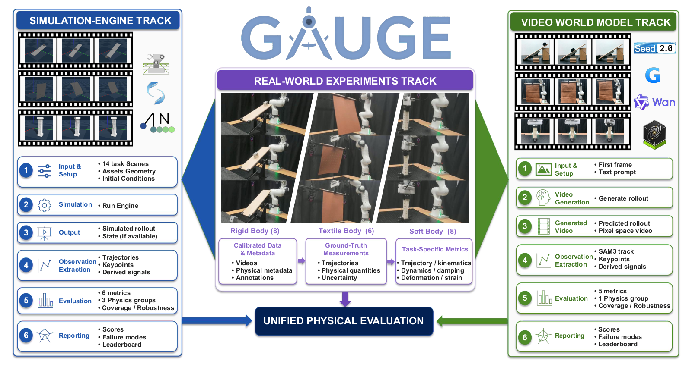

Measurement-grounded
Sixteen infrared cameras capture motion at 180 Hz. Repeated real-world trials provide millimeter-level trajectories, calibrated metadata, and uncertainty estimates.
Measure physical fidelity against the real world — not visual plausibility.
Shanghai Artificial Intelligence Laboratory · HKUST · Shanghai Jiao Tong University · Zhejiang University

Sixteen infrared cameras capture motion at 180 Hz. Repeated real-world trials provide millimeter-level trajectories, calibrated metadata, and uncertainty estimates.
One benchmark spans rigid bodies, flexible cables, textiles, and volumetric soft bodies—from collision and friction to self-contact and large deformation.
Trajectory error, equation form, physical parameters, and temporal stability are assessed separately so a plausible video cannot hide incorrect dynamics.
Collision · Friction · Momentum · Oscillation
Self-contact · Stretch modulus
Curvature · Strain · Rapid motion · Friction
Large deformation · Shear · Bending · Coupling
All 22 task families, their diagnostic target, condition count, and physical material instantiations.
| Task | Experiment | Diagnostic target | Variants | Materials |
|---|---|---|---|---|
| Rigid body 8 task families | ||||
| Slope contact | Fall of a trirectangular tetrahedron | Slope collisions | 1 | Wood, plastic |
| Nonsmooth contact | Fall of wedges and pyramids | Codimensional collisions | 3 | Wood, plastic |
| Slope slider | Cube sliding on a slope | Static and kinetic friction | 3 | Wood, plastic, metal |
| Turntable | Cube sliding on a turntable | Friction in a non-inertial frame | 3 | Wood, plastic, metal |
| Bouncing ball | Ball falling and bouncing | Rapid impact | 1 | Rubber |
| Newton’s cradle | Collision of closely fitted balls | Momentum transfer | 1 | Metal |
| Wall breaking | Wrecking ball colliding with a wall | Large-scale dense collisions | 1 | Wood |
| Pendulum | Oscillation of a ball | Periodic motion | 1 | Metal |
| Flexible cable 1 task family | ||||
| Rope winding | Winding of a rope | Self-collision and stretch modulus | 1 | Rubber |
| Textile 6 task families | ||||
| Textile stretching | Tensile deformation of a textile | Stretch modulus | 1 | R, S, U, O, L, N |
| Textile bending | Natural sagging of a textile | Bending modulus | 1 | R, S, U, O, L, N |
| Textile flinging | Fluttering of a textile | Locally high-acceleration motion | 1 | R, S, U, O, L, N |
| Funnel | Textile passing through a hole | Collision and friction | 1 | R, S, U, O, L, N |
| Rotating ball | Textile driven by a rotating ball | Static and kinetic friction | 1 | R, S, U |
| Tablecloth pulling | Textile pulled beneath rigid objects | Static and kinetic friction | 1 | Wood, plastic, metal |
| Volumetric soft body 7 task families | ||||
| Foam stretching | Stretching an elastic cuboid | Stretching modulus | 1 | Soft, hard |
| Foam compressing | Compressing an elastic cuboid | Compression modulus | 1 | Soft, hard |
| Foam shearing | Shearing an elastic cuboid | Shear modulus | 1 | Soft, hard |
| Foam twisting | Twisting an elastic cuboid | Twisting modulus | 1 | Soft, hard |
| Foam bending | Bending an elastic cuboid | Bending modulus | 1 | Soft, hard |
| Stick-stack | Elastic rod sliding on a plane | Static and kinetic friction | 1 | Soft, hard |
| Cantilever beam | Free-hanging elastic cantilever beam | Coupling with a large stiffness ratio | 1 | Soft, hard |
Material key: R = rayon, S = satin, U = uniform cloth, O = Oxford fabric, L = synthetic leather, N = nylon taslan.
Every card shows a canonical real-world trial. Videos load only as they approach the viewport.
How accurately does a numerical simulator reproduce measured outcomes?
Does generated motion obey the right laws at the right physical scale?
Simulator scores are normalized by the real-world baseline mean. Highlighted cells mark the best valid result for each metric row.
| Task | Material | Frames | Metric | Real baseline | Isaac Sim | Genesis | Newton |
|---|---|---|---|---|---|---|---|
| Slope contact | Plastic | 10 | RMSE | 12.31 (7.62) | 1.26 | 1.60 | 1.75 |
| DTW | 5.30 (1.84) | 1.83 | 2.57 | 3.07 | |||
| Nonsmooth contact | Plastic | 20 | RMSE | 17.67 (6.19) | 1.53 | 10.04 | 6.05 |
| DTW | 8.92 (2.44) | 1.90 | 14.37 | 8.01 | |||
| Slope slider | Metal | 60 | RMSE | 38.01 (28.53) | 0.61 | 0.58 | 1.95 |
| DTW | 9.54 (8.52) | 0.71 | 0.69 | 2.93 | |||
| Turntable | Metal | 95 | RMSE | 13.26 (7.43) | 0.17 | 0.57 | 20.04 |
| DTW | 3.33 (0.81) | 0.61 | 2.01 | 66.72 | |||
| Bouncing ball | Rubber | 18 | RMSE | 5.29 (3.60) | 15.63 | 22.50 | 22.71 |
| DTW | 4.23 (2.87) | 5.58 | 14.58 | 14.89 | |||
| Newton’s cradle | Metal | 1,027 | LSD | 0.38 (0.015) | 0.00 | — | 0.00 |
| MTE | 93.02 (2.47) | 0.20 | — | 0.26 | |||
| Pendulum | Metal | 300 | PD | 1.14 (0.066) | 1.10 | 2.47 | 1.09 |
| 3,000 | EL | 0.00 | 11.01 | −1.67 | 6.87 | ||
| Textile stretching | Satin | 380 | RMSE | 0.21 (0.42) | 0.73 | 1.51 | 0.73 |
| DTW | 0.21 (0.42) | 0.76 | 1.56 | 0.75 | |||
| Textile bending | Satin | 335 | RMSE | 1.92 (0.69) | 7.94 | 11.73 | 19.90 |
| DTW | 1.20 (0.17) | 11.78 | 17.35 | 18.82 | |||
| Textile flinging | Satin | 562 | RMSE | 0.016 (0.0056) | 128.26 | 8.54 | 9.25 |
| DTW | 0.012 (0.0014) | 167.31 | 11.27 | 12.12 | |||
| Foam stretching | Soft | 30 | RMSE | 8.72 (6.94) | 16.15 | 10.05 | 15.46 |
| DTW | 8.19 (6.93) | 17.18 | 10.65 | 16.45 | |||
| Foam shearing | Soft | 37 | RMSE | 5.60 (0.70) | 26.13 | 15.26 | 26.57 |
| DTW | 5.07 (0.59) | 28.85 | 16.74 | 29.34 | |||
| Foam twisting | Soft | 65 | RMSE | 8.07 (0.53) | 17.14 | 10.86 | 16.78 |
| DTW | 7.48 (0.39) | 18.47 | 11.67 | 18.07 | |||
| Foam bending | Soft | 35 | RMSE | 7.00 (4.39) | 10.71 | 14.43 | 10.37 |
| DTW | 3.52 (1.05) | 21.28 | 27.51 | 20.53 |
Baseline cells report the real-world mean with standard deviation in parentheses. The pendulum EL row is unnormalized because its real baseline is zero.
Select a scene, material, and prompt condition. The six outputs share the same input frame; unavailable interfaces are marked explicitly.
No physics engine is uniformly faithful across regimes.
Dynamic contact, rapid cloth motion, and volumetric deformation remain the largest sim-to-real gaps.
Video world models often recover equation form while missing physical scale and timing.
On wood, the lowest QFI is 13.61, while the closest generated acceleration is 2.06 m/s² against a 2.58 m/s² real baseline.
QFI: lower is better · acceleration: closer to baselineTwo outputs reach R² = 0.99, yet their periods are 1.93 s and 1.90 s versus the 1.06 s real period.
R²: higher is better · period: closer to baselineThe lowest reported QFI is 12.50, but its fitted acceleration is only 0.088 m/s² versus the 9.81 m/s² baseline.
QFI: lower is better · acceleration: closer to baselineFive rigid-body tasks expose a gap between visually plausible motion, the form of a physical law, and its recovered scale.
| Task | Material | Metric | Baseline | Cosmos3-Nano | Cosmos3-Super | Wan-2.2 | Wan-2.7 | Seedance 2 | Genie3 | ||||
|---|---|---|---|---|---|---|---|---|---|---|---|---|---|
| w/o | w | w/o | w | w/o | w | w/o | w | w/o | w/o | ||||
| Slope slider | Wood | QFI | 0.00 | 64.89 | 26.65 | 13.61 | 569.36 | 393.00 | 15.74 | 1201.08 | 558.97 | 781.51 | 40.11 |
| a | 2.58 | 2.06 | 0.90 | 0.13 | 0.12 | 0.43 | 0.091 | 0.061 | 0.038 | 0.23 | 0.62 | ||
| Plastic | QFI | 0.00 | 129.76 | 276.49 | 25.60 | 330.31 | 14.24 | 40.12 | 1164.59 | 942.08 | 8.69 | 67.07 | |
| a | 2.57 | 0.58 | 0.22 | 0.36 | 0.030 | 0.75 | 0.16 | 0.055 | 0.063 | 0.20 | 0.58 | ||
| Metal | QFI | 0.00 | 4.41 | 184.09 | 1266.40 | 924.39 | 116.64 | 6.96 | 60.70 | 1145.94 | 730.22 | 70.37 | |
| a | 2.67 | 0.36 | 0.15 | 0.056 | 0.068 | 0.24 | 0.40 | 0.046 | 0.038 | 0.074 | 0.43 | ||
| Turntable | Wood | DE | 0.00 | 0.078 | 0.10 | 0.092 | 0.00 | 0.00 | 0.00 | 0.18 | 0.00037 | 0.00 | 0.00 |
| Plastic | DE | 0.00 | 0.11 | 0.17 | 0.0029 | 0.11 | 0.00 | 0.00 | 0.032 | 0.050 | 0.00 | 0.00 | |
| Metal | DE | 0.00 | 0.0064 | 0.19 | 0.040 | 0.25 | 0.00048 | 0.00 | 0.12 | 0.78 | 0.0024 | 0.00 | |
| Bouncing ball | Rubber | QFI | 0.00 | 2620.05 | 1125.36 | 270.69 | 12.50 | 428.39 | 38.72 | 59.49 | 16.08 | 65.16 | 88.70 |
| a | 9.81 | 0.45 | 0.33 | 0.076 | 0.088 | 0.051 | 0.064 | 0.16 | 0.15 | 1.84 | −0.052 | ||
| Newton’s cradle | Metal | MTE | ∼1 | — | — | — | — | — | 0.76 | 0.55 | 0.48 | 0.24 | — |
| Pendulum | Metal | R2 | 1.00 | 0.86 | 0.66 | 0.50 | 0.92 | 0.98 | 0.99 | 0.71 | 0.72 | 0.96 | 0.99 |
| PD | 1.06 | 2.36 | 2.93 | 17.95 | 2.34 | 6.03 | 1.93 | 1.83 | 1.87 | 3.13 | 1.90 | ||
w/o and w denote generation without and with the negative prompt. Acceleration a is in m/s2; PD is in seconds. Dashes indicate unavailable generations.
@article{wang2026gauge,
title = {GAUGE: A Measurement-Grounded Benchmark for Physical Fidelity in Simulation Engines and Video World Models},
author = {Wang, Shuai and Feng, Yaxin and Jiang, Xuekun and Tian, Shihan and Yan, Ningyu and Shen, Xing and Lyu, Chaoyang and Wang, Hui and Zhou, Yunsong and Wang, Hanqing and Pang, Jiangmiao and Xiang, Yang and Gao, Xing and Shen, Chunhua and Zhang, Weinan},
year = {2026},
note = {Manuscript}
}